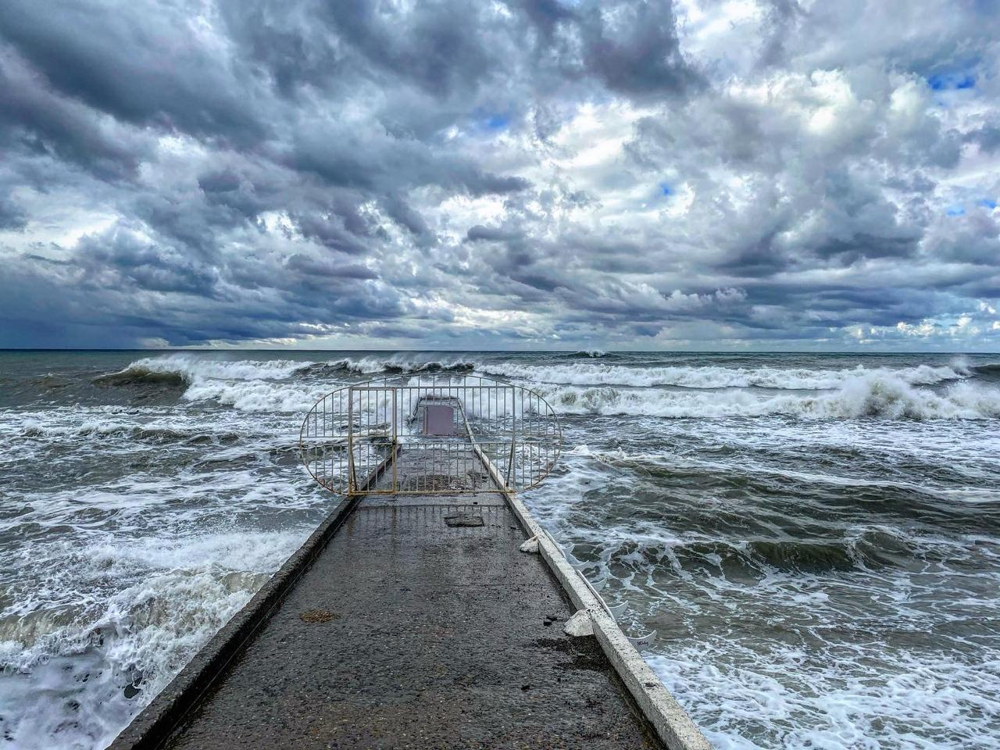
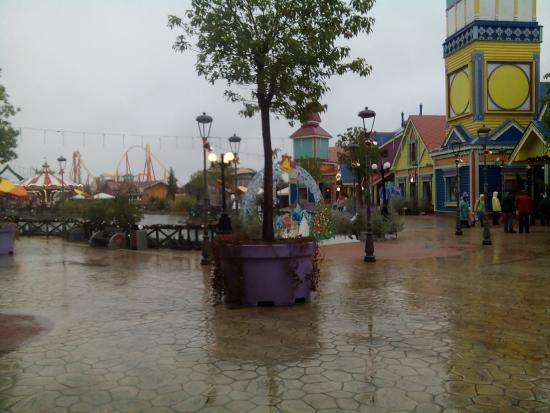
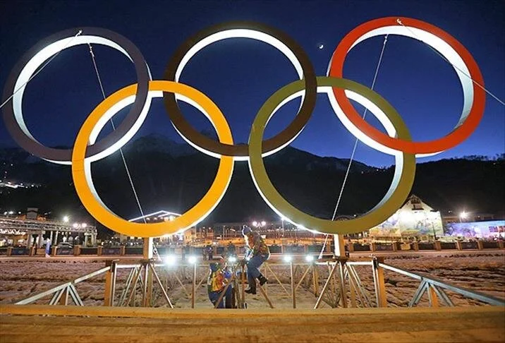
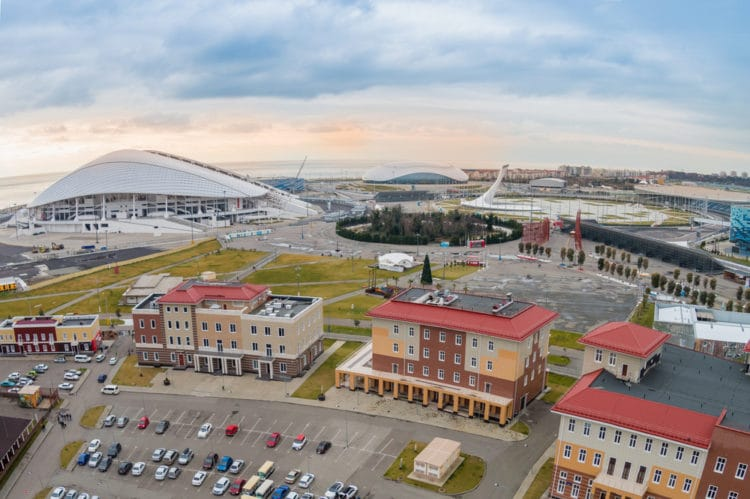
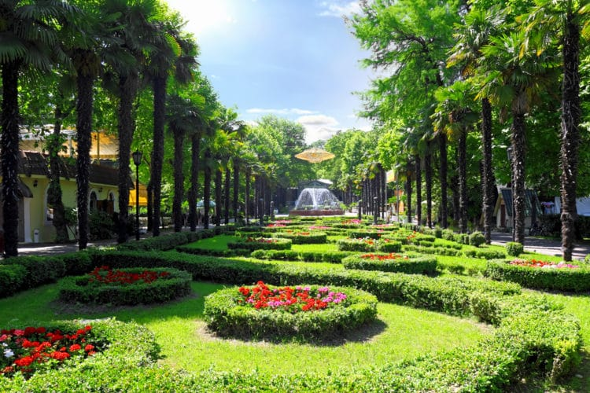
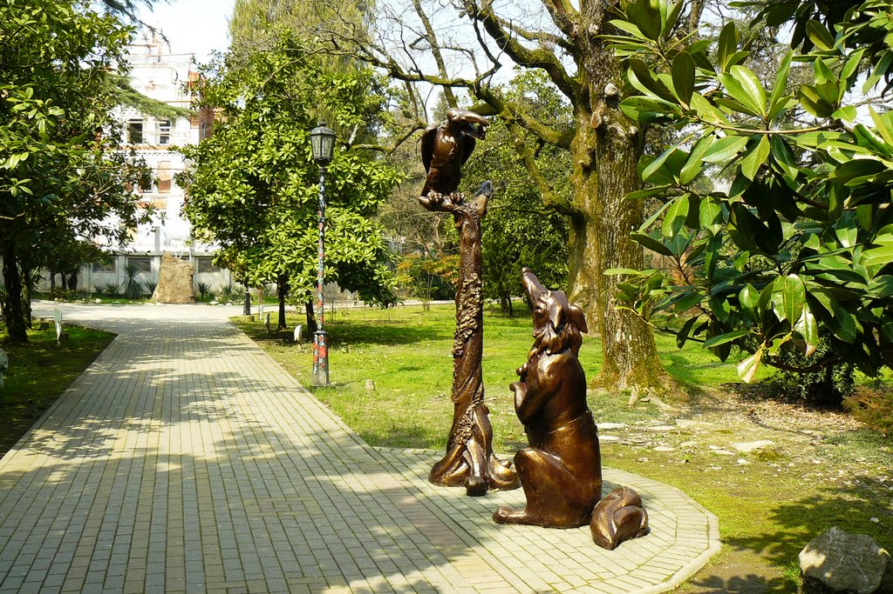
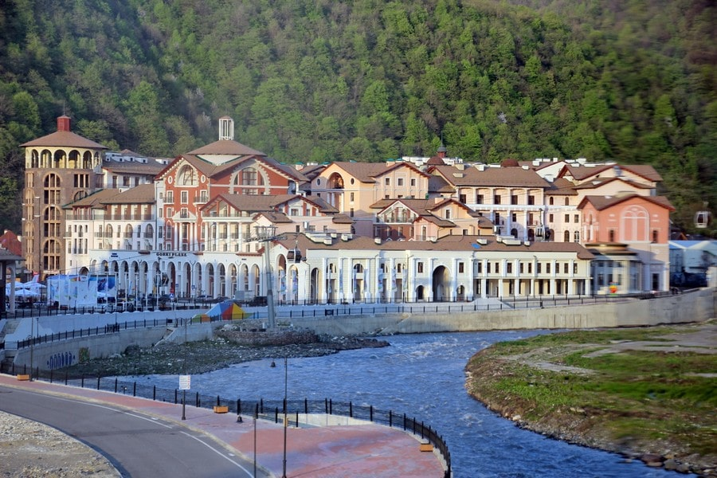
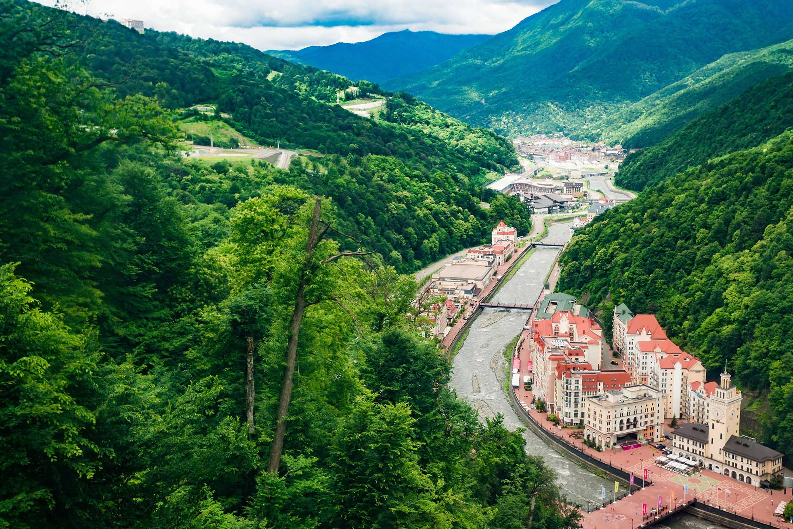

Прибрежная часть города Сочи, как и весь участок российского черноморского побережья южнее Туапсе, расположен в зоне влажных субтропиков, что сильно отличает этот регион от более северного участка побережья от Анапы до Туапсе, где господствует типичный полусухой средиземноморский климат. Территория города-курорта Сочи охватывает большую часть южного склона Кавказа от берега Чёрного моря до вершин Главного Кавказского хребта высотой до 3500 метров над уровнем моря. Поэтому в Сочи можно выделить несколько природно-климатических зон: прибрежная зона (до 200 метров над уровнем моря) шириной 450—2000 метров; предгорная зона (201—600 метров над уровнем моря); высокогорная зона (1001—1700 метров над уровнем моря) и Альпийская зона (1701—1800 метров над уровнем моря). На климат Сочи оказывают значительное влияние море и горы . Климат очень влажный (особенно вдоль побережья). Подобный климат наблюдается в соседней Абхазии, а также на юго-востоке США (штаты Миссисипи, Луизиана, Алабама, Джорджия, Флорида) Максимум осадков приходится на зимний период времени года — преимущественно в виде дождя, реже — снега. Зима тёплая, лето жаркое и влажное. Благодаря близости моря, высокие летние температуры несколько корректируются в сторону понижения и благоприятны для природы и человека. Подобный тип климата подходит для произрастания разного рода субтропических и умеренных культур. Поскольку Сочи расположен на северной границе субтропиков, зимой здесь изредка возможны заморозки и снегопады, но на побережье городской черты они бывают крайне редко и держатся в течение одного-пяти дней, а в некоторые годы и вовсе отсутствуют.
 В качестве претендента на проведение Олимпийских зимних игр первый раз Сочи выставлял свою кандидатуру в 1994 году, второй раз — в 1998. Третья попытка в 2007 году увенчалась успехом. Большое количество гостиниц и политическая поддержка — главные аргументы, давшие этому городу преимущество перед другими кандидатами. Сочи стал первым городом с субтропическим климатом, где прошли зимние Олимпийские игры. Олимпийские зимние игры прошли в Сочи с 7 по 23 февраля 2014 года. Паралимпийские зимние игры прошли с 7 по 16 марта 2014 года. Для проведения игр в течение 5-6 лет построили множество спортивных и инфраструктурных объектов, расположенных в двух кластерах: прибрежном и горном. В горах, в районе Красной Поляны, прошли соревнования по горнолыжному спорту, лыжным гонкам, биатлону, сноуборду, фристайлу, прыжкам на лыжах с трамплина, бобслею, санному спорту и скелетону. На берегу Чёрного моря, в Имеретинской низменности, в специально построенном к Олимпиаде Олимпийском парке и расположенных на его территории спортивных сооружениях прошли официальные церемонии открытия и закрытия Олимпийских и Паралимпийских игр, а также соревнования по хоккею, конькобежному спорту, фигурному катанию, кёрлингу.

Олимпийский парк
Олимпийский парк — общественная зона и одна из достопримечательностей Большого Сочи, главный комплексный объект Зимних Олимпийских игр 2014 года и одно из мест проведения в России Чемпионата мира по футболу 2018.

Удивительной красоты парк «Ривьера» — самый популярный курортный парк Сочи, посетить который обязательно должен каждый отдыхающий и житель города. Парк занимает территорию 14,7 гектаров, на которой насчитывается 240 видов растений, из которых 50 видов представляют особую ценность.
 посёлок городского типа в подчинении Адлерского района муниципального образования город-курорт Сочи в Краснодарском крае Российской Федерации. Административный центр Краснополянского поселкового округа. Общий вид на Красную Поляну с хребта Псехако. На переднем плане — горная олимпийская деревня.
 